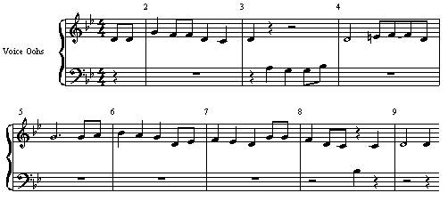

Automatic transcription of singing, examples
Author: Matti Ryynänen,
homepage
Last modified: Wed May 5 13:57:00 EEST 2004
Transcription method
All the melodies are transcribed with the method described in [1]. The
method takes an acoustic input file (in .wav format) and produces a MIDI
file, including notes with velocity values,
a tempo estimate, and a key signature
estimate. The tempo is estimated with the method proposed in [2], and the
key estimation method was originally proposed in [3], but simplified in [1].
The transcription method uses
- Three-state hidden Markov model to describe note events
- Pitch, voicing, and accent as musical features
- Note bigrams (with key estimation) for between-note transitions
In addition, vibrato in sung notes is detected and coded
as pitch bend messages in MIDI files. The note velocities are
determined by the average of RMS energies (mapped to range 0-1)
of the voiced frames
during notes (variable E) and
compressed with mu-law mapping,
log(1 + mu * E) / log( 1 + mu ),
where mu = 10.
The following figures of the scores were generated by importing
the transcribed MIDI files to the Emagic Logic Audio software
and then using the graphic export function of the Logic Audio score editor.
Notice that the transcriptions were not
manually processed in any way, except that the MIDI sequences were shifted
in time (with eighth-note shifts) to match the bar lines with the
performance, e.g., in
cases of upbeat starts in melodies. The
score editor quantises note starts and interprets note lengths by given
accuracy. In most cases, an eighth-note and an eighth-note triplet score
quantiser was set on. Tempo, key
signature, or notes were not modified with the sequencer, i.e.,
Logic Audio was used only for creating the figures, not the
synthesised MIDI files in the following.
References
[1] M. Ryynänen, "Probabilistic Modelling of Note Events in the Transcription of Monophonic Melodies," Master's thesis, Tampere University of Technology, March 2004. Available:
.pdf
.ps
[2] A. P. Klapuri, A. J. Eronen, and J. T. Astola, "Analysis of the
meter of acoustic music signals," IEEE Transactions on Speech and
Audio Processing, to appear.
[3] T. Viitaniemi, A. Klapuri and A. Eronen. "A probabilistic
model for the transcription of single-voice melodies," in
Proceedings of the 2003 Finnish Signal Processing Symposium, FINSIG'03,
May 2003.
Examples
In the following examples, acoustic
inputs and the corresponding transcriptions (synthesised directly from the
MIDI files) are provided in mp3 format.
Song: En etsi valtaa loistoa
- Singing technique: syllable
- Key signature: F major (correctly estimated)
- Acoustic input: mp3
- Transcription output (synthesised MIDI):
mp3
- Score:
- Comments: an easy transcription case, since only one syllable used.
Vibrato found in measures 5 and 9.
Song: Lännen lokari
- Singing technique: syllable
- Key signature: G minor (correctly estimated)
- Acoustic input: mp3
- Transcription output (synthesised MIDI):
mp3
- Score:

- Comments: quite easy, although notes are short.
Vibrato found in measure 9. However, some adjacent eighth-notes are
interpreted as fourth-notes.
Song: Brother, can you spare me a dime
- Singing technique: syllable
- Key signature: A minor (correctly estimated)
- Acoustic input: mp3
- Transcription output (synthesised MIDI):
mp3
- Score:
- Comments: some good vibratos and also correctly transcribed notes
with accidentals (also a few wrong ones). Usually, the first note is
hard to transcribe correctly.
Song: Pieni tyt�n tyller�inen
- Singing technique: lyrics
- Key signature: D minor (correctly estimated)
- Acoustic input: mp3
- Transcription output (synthesised MIDI):
mp3
- Score:
- Comments: in the fifth measure, singing with the lyrics
results in additional note boundaries.
Song: Over The Rainbow
- Singing technique: syllable
- Key signature: C major (correctly estimated)
- Acoustic input: mp3
- Transcription output (synthesised MIDI):
mp3
- Score:
- Comments: some good vibratos.
Song: Oravan pesä
- Singing technique: syllable
- Key signature: F major (correctly estimated)
- Acoustic input: mp3
- Transcription output (synthesised MIDI):
mp3
- Score:
- Comments: The key signature was manually changed to 3/8. Too high
octave errors occur in measures 8 and 11, caused by the front-end
pitch estimator.
Song: Yesterday
- Singing technique: humming
- Key signature: F major (correctly estimated)
- Acoustic input: mp3
- Transcription output (synthesised MIDI):
mp3
- Score:

- Comments: a very good humming transcription.
Song: Puhelinlangat laulaa
- Singing technique: lyrics
- Key signature: C minor (correctly estimated)
- Acoustic input: mp3
- Transcription output (synthesised MIDI):
mp3
- Score:
- Comments: In the beginning of the singing performance
(measures 1 and 2),
there are some inaccuracies which are hard to transcribe correctly.
Song: Hopeinen kuu (Guarda che luna)
- Singing technique: lyrics
- Key signature: D minor (correctly estimated)
- Acoustic input: mp3
- Transcription output (synthesised MIDI):
mp3
- Score:
- Comments: The song includes triplets and difficult melodic phrases.
Song: Sävel rakkauden
- Singing technique: syllable
- Key signature: F major (correctly estimated)
- Acoustic input: mp3
- Transcription output (synthesised MIDI):
mp3
- Score:

- Comments: A good transcription with vibratos. The tempo estimate
was slightly too slow which moved the notes an eighth-note backwards
in measures 13-16 (a long melody).
Song: Telefoni afrikassa
- Singing technique: lyrics
- Key signature: Bb major (correctly estimated)
- Acoustic input: mp3
- Transcription output (synthesised MIDI):
mp3
- Score:
- Comments: some troubles transcribing measures 6 and 7.
Song: Pieni ankanpoikanen
- Singing technique: humming
- Key signature: E major (incorrectly estimated, should be D major)
- Acoustic input: mp3
- Transcription output (synthesised MIDI):
mp3
- Score:
- Comments: a very hard transcription case.
Song: Taivas on sininen ja valkoinen
- Singing technique: humming
- Key signature: C major (correctly estimated)
- Acoustic input: mp3
- Transcription output (synthesised MIDI):
mp3
- Score:
- Comments: clear velocity and vibrato changes in measure 4.
Song: Brother, can you spare me a dime
- Singing technique: lyrics
- Key signature: A minor (correctly estimated)
- Acoustic input: mp3
- Transcription output (synthesised MIDI):
mp3
- Score:
- Comments: expressive singing is hard to transcribe. Especially,
glissandos to note pitches are difficult to correct.
Song: Ranskalaiset korot
- Singing technique: lyrics
- Key signature: A minor (correctly estimated)
- Acoustic input: mp3
- Transcription output (synthesised MIDI):
mp3
- Score:
- Comments: a perfect transcription.